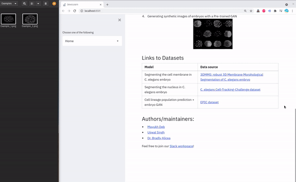
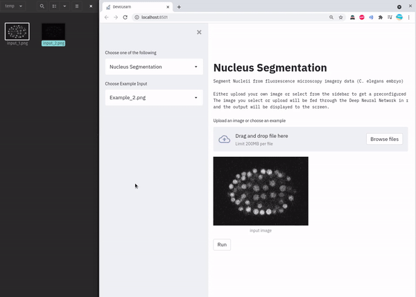

GSoC - Coding Period Week 7
Work Done This Week (July 20th to July 25th)
- Converted the nucleus segmentation model into ONNX (Link to code)
- Began working on the DevoLearn GUI, this time using Streamlit, this would support multiple models on one web-app.
- Built the pipeline to run inference using the ONNX models, ran tests to ensure the 2 segmentation models work via the GUI.
- The user will have the ability to select any of the DevoLearn models from the drop down menu to the left, then drag and drop inputs. I've also added in some examples, just in case.


- The GIFs above showcase the current progress. I could get 2 of the segmentation models to work with the GUI.
- As of now, the home page contains animations that highlight what the software can do. I have plans to add more content soon.
- All related files for this work could be found here - [Github repository]()
Planned:
- Finish building the GUI for DevoLearn, host it online on Heroku.
- Try to render interactive plots (using Plotly) in the GUI.
- Look into ways of running bulk inference using the web-GUI.
- Move from Travis CI to Github Actions.